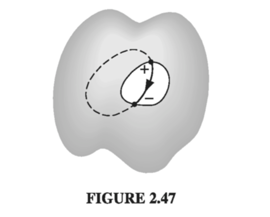

2.5: Conductors#
2.5.1: Basic Properties#
In an insulator, such as glass or rubber, each electron is on a short leash, attached to a particular atom. In a metallic conductor, by contrast, one or more electrons per atom are free to roam. (In liquid conductors such as salt water, it is ions that do the moving). A perfect conductor would contain an unlimited supply of free charges. In real life there are no perfect conductors, but metals come pretty close, for most purposes.
From this definition, the basic electrostatic properties of ideal conductors immediately follow:
(i) E = 0 inside a conductor. Why? Because if there were any field, those free charges would move, and it wouldn’t be electrostatics any more. Hmm… that’s hardly a satisfactory explanation; maybe all it proves is that you can’t have electrostatics when conductors are present. We had better examine what happens when you put a conductor into an external electric field \( \vec{E_0} \) (Fig. 2.42). Initially, the field will drive any free positive charges to the right, and negative ones to the left. (In practice, it’s the negative charges - electrons - that do the moving, but when they depart, the right side is left with a net positive charge - the stationary nuclei - so it doesn’t really matter which charges move; the effect is the same). When they come to the edge of the material, the charges pile up: plus on the right side, minus on the left. Now, these induced charges produce a field of their own, \( \vec{E_1} \), which, as you can see from the figure, is in the opposite direction to \( \vec{E_0} \). That’s the crucial point, for it means that the field of the induced charges tends to cancel the original field. Charge will continue to flow until this cancellation is complete, and the resultant field inside the conductor is precisely zero. The whole process is practically instantaneous.

(ii) \( \rho = 0 \) inside a conductor. This follows from Gauss’s law: if E is zero, so also is \( \rho \). There is still charge around, but exactly as much plus as minus, so the net charge density in the interior is zero.
(iii) Any net charge resides on the surface. That’s the only place left.
(iv) A conductor is an equipotential. For if a and b are any two points within (or at the surface of) a given conductor, \( V(b) - V(a) = - \int _{a} ^{b} \vec{E} \cdot \mathrm{d}{\vec{l}} = 0 \), and hence \( V(a) = V(b) \).
(v) E is perpendicular to the surface, just outside a conductor. Otherwise, as in (i), charge will immediately flow around the surface until it kills off the tangential component (Fig. 2.43). (Perpendicular to the surface, charge cannot flow, of course, since it is confined to the conducting object.)

I think it is astonishing that the charge on a conductor flows to the surface. Because of their mutual repulsion, the charges naturally spread out as much as possible, but for all of them to go to the surface seems like a waste of the interior space. Surely we could do better, from the point of view of making each charge as possible from its neighbors, to sprinkle some of them throughout the volume. Well, it simply is not so. You do best to put all the charge on the surface, and this is true regardless of the size or shape of the conductor.
The problem can also be phrased in terms of energy. Like any other free dynamical system, the charge on a conductor will seek the configuration that minimizes its potential energy. What property (iii) asserts is that the electrostatic energy of a solid object (with specified shape and total charge) is a minimum when that charge is spread over the surface. For instance, the energy of a sphere is \( (1 / 8 \pi \epsilon_0)(q^2 / R) \) if the charge is uniformly distributed over the surface, as we found in Ex 2.9, but it is greater \( (3/20 \pi \epsilon_0)(q^2 / R) \) if the charge is uniformly distributed throughout the volume (Prob. 2.34).
2.5.2: Induced Charges#
If you hold a charge +q near an uncharged conductor (Fig 2.44), the two will attract one another. The reason for this is that q will pull minus charges over to the near side and repel plus charges to the far side (Another way to think of it is that the charge moves around in such a way as to kill off the field of q for points inside the conductor, where the total field must be zero.) Since the negative induced charge is closer to q, there is a net force of attraction. (In chapter 3 we will calculate this force explicitly, for the case of a spherical conductor.)
When I speak of the field, charge, or potential “inside” a conductor, I mean in the “meat” of the conductor. If there is some hollow cavity in the conductor, and within that cavity you put some charge, then the field in the cavity will not be zero. But in a remarkable way the cavity and its contents are electrically isolated from the outside world by the surrounding conductor (Fig. 2.45). No external fields penetrate the conductor; they are canceled at the outer surface by the induced charge there. Similarly, the field due to charges within the cavity is canceled, for all exterior points, by the induced charge on the inner surface. However, the compensating charge left over on the outer surface of the conductor effectively “communicates” the presence of q to the outside world. The total charge induced on the cavity wall is equal and opposite to the charge inside, for if we surround the cavity with a Gaussian surface, all points of which are in the conductor (Fig 2.45), \( \oint \vec{E} \cdot \mathrm{d}{\vec{a}} = 0 \), and hence (by Gauss’s law) the net enclosed charge must be zero. But \( Q_{enc} = q + q_{induced} \), so \( q_{induced} = - q \). Then if the conductor as a whole is electrically neutral, there must be a charge +q on its outer surface.

Example 2.10#
An uncharged spherical conductor centered at the origin has a cavity of some weird shape carved out of it (Fig. 2.46). Somewhere within the cavity is a charge q. Question: What is the field outside the sphere?

Solution At first glance, it would appear that the answer depends on the shape of the cavity and the location of the charge. But that’s wrong: the answer is
regardless. The conductor conceals from us all information concerning the nature of the cavity, revealing only the total charge it contains. How can this be? Well, the charge +q induces an opposite charge -q on the wall of the cavity, which distributes itself in such a way that its field cancels that of q, for all points exterior to the cavity. Since the conductor carries no net charge, this leaves +q to distribute itself uniformly over the surface of the sphere. (It’s uniform because the asymmetrical influence of the point charge +q is negated by that of the induced charge -q on the inner surface.) For points outside the sphere, then, the only thing that survives is the field of the leftover +q, uniformly distributed over the outer surface.
It may occur to you that in one respect this argument is open to challenge: There are actually three fields at work here: \( \vec{E_q}, \vec{E_{induced}} \), and \( \vec{E_{leftover}} \). All we know for certain is that the sum of the three is zero inside the conductor, yet I claimed that the first two alone cancel, while the third is separately zero there. Moreover, even if the first two cancel within the conductor, who is to say they still cancel for points outside? They do not, after all, cancel for points inside the cavity. I cannot give you a completely satisfactory answer at the moment, but this much at least is true: there exists a way of distributing -q over the inner surface so as to cancel the field of q at all exterior points. For that same cavity could have been carved out of a huge spherical conductor with a radius of 27 miles or light years or whatever. In that case, the leftover +q on the outer surface is simply too far away to produce a significant field, and the other two fields would have to accomplish the cancellation by themselves. So we know they can do it… but are we sure they choose to? Perhaps for small spheres nature prefers some complicated three-way cancellation? Nope: As we’ll see in the uniqueness theorems of Chapter 3, electrostatics is very stingy with its options; there is always precisely one way - no more - of distributing the charge on a conductor so as to make the field inside zero. Having found a possible way, we are guaranteed that no alternative exists, even in principle.
If a cavity surrounded by conducting material is itself empty of charge, then the field within the cavity is zero. For any field line would have to begin and end on the cavity wall, going from a plus charge to a minus charge (Fig 2.47). Letting that field line be part of a closed loop, the rest of which is entirely inside the conductor (where E = 0), the integral \( \oint \vec{E} \cdot \mathrm{d}{\vec{l}} \) is distinctly positive, in violation of Eq. 2.19. It follows that \( E = 0 \) within an empty cavity, and there is in vact no charge on the surface of the cavity. (This is why you are relatively safe inside a metal car during a thunderstorm - you may get cooked, if lightning strikes, but you will not be electrocuted. The same principle applies to the placement of sensitive apparatus inside a grounded Faraday cage, to shield out stray electric fields. In practice, the enclosure doesn’t even have to be solid conductor - chicken wire will often suffice.)

2.5.3: Surface Charge and the Force on a Conductor#
Because the field inside a conductor is zero, boundary condition Eq. 2.33 requires that the field immediately outside is
consistent with our earlier conclusion that the field is normal to the surface. In terms of potential, Eq. 2.36 yields
These equations enable you to calculate the surface charge on a conductor, if you can determine \( \vec{E} \) or \( V \); we shall use them frequently in the next chapter.
In the presence of an electric field, a surface charge will experience a force; the force per unit area, \( \vec{f} \), is \( \sigma \vec{E} \). But there’s a problem here, for the electric field is discontinuous at a surface charge, so what are we supposed to use: \( \vec{E}_{above}, \vec{E}_{below} \), or something in between? The answer is that we should use the average of the two
Why the average? The reason is very simple, thought the telling makes it sound complicated: Let’s focus our attention on a tiny patch of surface surrounding the point in question (Fig. 2.50). Make it small enough so it is essentially flat and the surface in question is essentially constant. The total field consists of two parts - that attributable to the patch itself, and that due to everything else (other regions of the surface, as well as any external sources that may be present)
Now, the patch cannot exert a force on itself, any more than you can lift yourself by standing in a basket and pulling up on the handles. The force on the patch, then, is exclusively due to \( \vec{E}_{other} \), and this suffers no discontinuity (if we removed the patch, the field in the “hole” would be perfectly smooth). The discontinuity is due entirely to the charge on the patch, which puts out a field \( (\sigma / 2 \epsilon_0) \) on either side, pointing away from the surface. Thus,
and hence
Averaging is really just a device for removing the contribution of the patch itself.
That argument applies to any surface charge; in the particular case of a conductor, the field is zero inside and \( (\sigma / \epsilon_0)\hat{n} \) outside ((112), so the average is \( (\sigma / 2 \epsilon_0) \hat{n} \), and the force per unit area is
This amounts to an outward electrostatic pressure on the surface, tending to draw the conductor into the field, regardless of the sign of \( \sigma \). Expressing the pressure in terms of the field just outside the surface
2.5.4: Capacitors#

Suppose we have two conductors, and we put charge +Q on one and -Q on the other (Fig 2.51). Since V is constant over a conductor, we can speak unambiguously of the potential difference between them:
We don’t know how the charge distributes itself over the two conductors, and calculating the field would be a nightmare, if their shapes are complicated, but this much we do know: \( \vec{E} \) is proportional to \( Q \). For \( \vec{E} \) is given by Coulomb’s law:
so if you double \( \rho \), you double \( \vec{E} \). Wait a minute! How do we know that doubling Q (and also -Q) simply doubles \( \rho \)? Maybe the charge moves around into a completely different configuration, quadrupling \( \rho \) in some places and halving it in others, just so the total charge on the conductor is doubled. The fact is that this concern is unwarranted - doubling Q does double \( \rho \) everywhere; it doesn’t shift charge around. The proof will come in Chapter 3; for now you’ll have to trust me.
Since \( \vec{E} \) is proportional to Q, so also is V. The constant of proportionality is called the capacitance of the arrangement
Capacitance is a purely geometrical quantity, determined by the sizes, shapes, and separation of the two conductors. In SI units, C is measured in farads (F); a farad is a coulomb-per-volt. Actually this turns out to be inconveniently large; more practical units are the microfarad (\( 10^{-6} F \)) and the picofarad (\( 10^{-12} F \))
Notice that V is, by definition, the potential of the positive conductor less that of the negative one; likewise, Q is the charge of the positive conductor. Accordingly, capacitance is an intrinsically positive quantity. By the way, you will occasionally hear someone speak of the capacitance of a single conductor. In this case the “second conductor” is an imaginary spherical shell of infinite radius surrounding the one conductor. It contributes nothing to the field, so the capacitance is given by (116), where V is the potential with infinity as the reference point.
Example 2.11#
Find the capacitance of a parallel-plate capacitor consisting of two metal surfaces of area A held a distance d apart (Fig. 2.52)

If we put +Q on the top and -Q on the bottom, they will spread out uniformly over the two surfaces, provided the area is reasonably large and the separation small. The surface charge density, then, is \( \sigma = Q / A \) on the top plate, and so the field, according to Ex. 2.6, is \( (1 / \epsilon_0) Q / A \). The potential difference between the plates is therefore
and hence
If, for instance, the plates are square with sides 1 cm long, and they are held 1 mm apart, then the capacitance is \( 9 \times 10^{-13} F \)
Example 2.12#
Find the capacitance of two concentric spherical metal shells, with radii a and b.
Place charge +Q on the inner sphere, and -Q on the outer one. The field between the spheres is
so the potential difference between them is
As promised, V is proportional to Q; the capacitance is
To “charge up” a capacitor, you have to remove electrons from the positive plate and carry them to the negative plate. In doing so, you fight against the electric field, which is pulling them back toward the positive conductor and pushing them away from the negative one. How much work does it take, then, to charge the capacitor up to a final amount \( Q \)? Suppose that at some intermediate stage in the process the charge on the positive plate is \( q \), so that the potential difference is \( q / C \). According to Eq. 2.38, the work you must do to transport the next piece of charge \( dq \) is
The total work necessary, then, to go from \( q = 0 \) to \( q = Q \), is
or, since \( Q = CV \),
where \( V \) is the final potential of the capacitor.